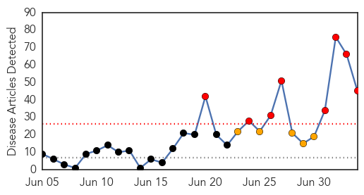
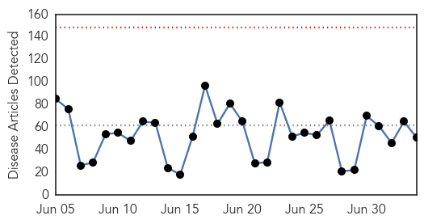
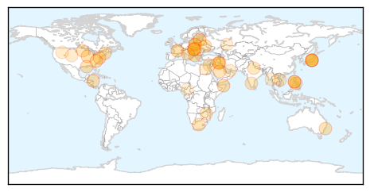
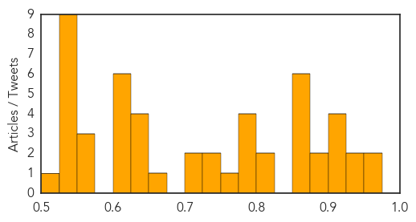

Ebola
30-Day Web Trend
8 alerts, 5 warnings

30-Day Twitter Trend
5 alerts, 0 warnings
Article Locations

Article Confidences

Top Articles:
- 1.000
- Ebola virus disease, West Africa – update
- 1.000
- Ebola outbreak in Africa: Frightened victims hiding in homes and churches help spread disease
- 1.000
- Deadly ebola epidemic will rampage for several months, says UN
- 1.000
- How Ready Is Ghana To Fight Against Ebola? -
- 1.000
- W. African Ebola epidemic 'likely to last months'
- 1.000
- Ebola Is 'Out Of Control' Across West Africa
- 1.000
- Ebola epidemic unlikely to spread beyond Africa
- 1.000
- WHO Ebola Virus Conference in West Africa Reveals New Strategy
- 1.000
- As Ebola Cases Spike, WHO Asks For More Money And Help
- 1.000
- Ebola epidemic unlikely to spread beyond Africa
- 1.000
- Cultural practices are a threat to contain Ebola
- 1.000
- West African Countries Agree for Common Strategy to Battle Ebola
- 1.000
- Ebola virus: Can nations stop deadliest ever outbreak from spreading?
- 1.000
- Ebola virus disease explained: Q&A
- 1.000
- West African Nations Come Together to Stop Worst Ever Ebola Outbreak
- 0.999
- Experts highlight problems in Sierra Leone
- 0.999
- Health workers race to halt Ebola in West Africa
- 0.999
- 11 African countries agree on strategy to combat Ebola outbreak
- 0.999
- Scientist who discovered Ebola virus says 'We're running out of time'
- 0.999
- Regional leaders say they'll collaborate to stop deadly Ebola epidemic 04/07/2014
- 0.999
- Ebola virus disease explained: Q&A
- 0.999
- Uganda tightens Ebola surveillance measures
- 0.999
- Health Ministers agree on priority actions to end Ebola outbreak in West Africa
- 0.999
- Ebola: UN agency to help West Africa coordinate response to 'unprecedented' outbreak
- 0.998
- Gov't honours fallen doctor
- 0.998
- ECOWAS Health Ministers adopt priority actions to end Ebola
- 0.997
- Experts highlight problems in Sierra Leone
- 0.997
- Ebola problems highlighted in Sierra Leone
- 0.996
- Gov’t eyes evacuation of OFWs from Ebola-affected countries
- 0.996
- Ebola scare: WHO to create sub-regional control centre in Guinea
- 0.995
- Sudan Vision Daily
- 0.992
- West African authorities adopt common strategy to fight Ebola
- 0.990
- WHO to set up Ebola control center in Guinea
- 0.990
- West African authorities adopt common strategy to fight Ebola
- 0.988
- Kenya : Experimental Ebola drugs should be tried in Africa, disease expert says
- 0.988
- Ebola outbreak: 11 African nations agree to plan to tackle deadly epidemic
- 0.987
- UN: W. African Ebola outbreak may last several months
- 0.986
- To Combat Ebola Outbreak, Health Officials Call For 'Drastic' Action
- 0.984
- Kenya : Red Cross suspends Ebola operations in southeast Guinea after threats
- 0.974
- World Health Organization To Establish A Sub-Regional Control Center In Guinea On Ebola
- 0.968
- UNICEF-Liberia Ebola Virus Disease: SitRep #32, 04 July 2014 - Liberia
- 0.964
- How Ebola created a climate of fear in my region
- 0.944
- London Mining supports public education campaign on Ebola
- 0.936
- Ebola emergency meeting: West Africa collaborates
- 0.621
- Page not found
Top Tweets:
- 0.867
- RT: 2/2 Ebola outbreak in West Africa: Point is it should inspire empathy & help...not global fear.
- 0.648
- RT: SierraLeone - Ebola: Laboratory confirmed cases of 239 & 70 confirmed deaths http://t.co/ymbq6yiHMj h/t Donners
Unknown
30-Day Web Trend
0 alerts, 0 warnings

30-Day Twitter Trend
0 alerts, 0 warnings

Article Locations
Article Confidences
Top Articles:
- 0.964
- European Commission fails to offer any proposal on African swine fever control
- 0.960
- Filipinos urged to delay hajj over MERS
- 0.939
- Veterinary department trains guns on fowl after pigs cleared of JE
- 0.937
- The Daily Reflector
- 0.917
- Chicago Tribune
- 0.917
- Chicago Tribune
- 0.917
- Chicago Tribune
- 0.917
- Chicago Tribune
- 0.897
- Misery, and mysteries, persist
- 0.881
- 'Anthrax Infected Beef' Leaves Five Hospitalised
- 0.874
- These pests can carry disease
- 0.866
- Ukraine's parliament gives preliminary approval to gov't energy proposals
- 0.859
- Saudi MERS: Philippines urges its Muslims to abort Hajj - Regional
- 0.859
- Tuberculosis Levels in Russia and Belarus 'Disaster,' WHO Says
- 0.856
- Sudan Vision Daily
- 0.852
- Crow Wing County Community Services issues tick-borne illness alert
- 0.815
- Philippines urges its Muslims to abort Hajj
- 0.809
- Philippines urges Muslims to abort Hajj
- 0.791
- Tests clear Penang pig farms of carrying Japanese Encephalitis virus
- 0.788
- Health Department finds tularemia in rabbit in Fort Collins
- 0.786
- Over 50 take ill after drinking contaminated water
- 0.779
- A dig at Zimbabwe’s untrusted waters
- 0.767
- WHO Aims at Eliminating Tuberculosis in 33 Countries With Low Levels of the Disease
- 0.734
- Add chapter on rabies, say experts
- 0.725
- Anthrax discovered in beef in Hungary
- 0.717
- Samples from Penang pig farms free of JE
- 0.711
- Beware of Lyme disease while out this summer
- 0.672
- Medical sector upgrades to prepare for AEC
- 0.640
- Latvian Saeima declares state of emergency in area hit by swine-fever outbreak :: The Baltic Course
- 0.637
- Latvia may declare state of emergency to cope with African swine fever
- 0.636
- Deadly anthrax disease 'discovered in Hungarian beef'
- 0.627
- On its sixth day running, U.A.E. Water Aid provides clean drinking water for 3.444 million peopleUAE
- 0.619
- Foster Farms Recalls Salmonella Tainted Chicken
- 0.615
- No JE virus detected in blood samples - Nation
- 0.610
- Horse Virus Found in WY, Shouldn't be Concern for CFD
- 0.606
- Syria and neighbouring countries: Water shortages add to woes - Syrian Arab Republic
- 0.603
- Syria and neighbouring countries: Water shortages add to woes
- 0.601
- Let’s ask Dr. Google!
- 0.574
- Hungary probes suspected anthrax infection
- 0.564
- Province providing free water testing for private water supplies
- 0.555
- TASS: Business & Economy
- 0.546
- 6 people hospitalized with anthrax poisoning in Hungary
- 0.541
- Tax exile Depardieu to open ‘Gérard’ restaurant in Moscow
- 0.541
- Grief, rage as Palestinians bury slain teen
- 0.541
- Iraq’s Maliki vows to 'never give up' on third term bid
- 0.541
- Kurdistan seeks independence referendum amid Iraq unrest
- 0.541
- Germany arrests 'double agent' suspected of spying for US
- 0.541
- Mother stabs teacher to death in French primary school
- 0.541
- France allows employers to ban wine in workplace
- 0.528
- Wet Season Brings Spike In Malaria « Karen News
Showing top 50 articles...
Top Tweets:
-
No tweets found for Jul 04, 2014